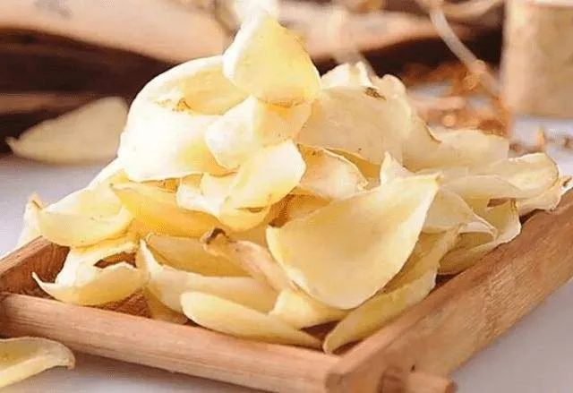

百合的功效与作用 百合的吃法和做法
百合，别名喇叭筒、山百合。味道鲜美，营养丰富，药用价值很高。百合入药始载于《神农本草经》，能养阴清热、滋补润肺,可治虚烦惊悸,阴虚久咳。《本草纲目》中称百合“可润肺止咳、宁心安神、补中益气”。百合有养阴清热、滋补润肺、清心安神的功效，用于肺阴虚所致的干咳、痰少黏白或无痰;也可用于阴虚有热之神经衰弱、癔症及热病后体虚;还有养胃阴、清胃热的作用，可用于胃阴虚有热所致的胃脘部隐隐作痛、口燥咽干、大便干结等。百合含有多种生物碱及多糖类苷类等成分,有提高免疫力、镇咳祛痰、平喘安眠的作用。外用可止血。下面就随小编一起来看看百合的功效与作用，百合的吃法和做法!

01
百合的功效与作用
1、宁心安神
百合有很好的宁心安神的作用，能使心情烦躁的人静下心来。对于喜欢思考或者经常做牛角尖的人来说，多吃百合有镇静和舒缓的效果。对神经衰弱病人来说，临睡前吃少量的百合还有帮助睡眠的作用。
2、补阴退热
身体虚弱引起的发烧，不愿意通过药物来辅助，那么可以坚持吃百合来缓解发烧症状。另外百合还有抗炎的作用，如果发烧时候同时伴有感冒症状，也是可以一起治愈的。
3、补中益气
有的人声音低落、呼吸困难、舌头干涩、食欲不振，并且经常处于虚弱状态，这是典型的中气不足的临床症状。这类人要多吃百合，能够缓解这些中气不足带来的症状。
4、清心除烦
对于经常有心态异常、恐慌、心烦或心神不安的人来来说，可以经常吃百合。这是因为百合具有使心脏平静的功能，经常食用可以缓解上述症状。
本站文章均来自互联网，仅供学习参考，如有侵犯您的版权，请邮箱联系我们删除！
 上一篇
上一篇